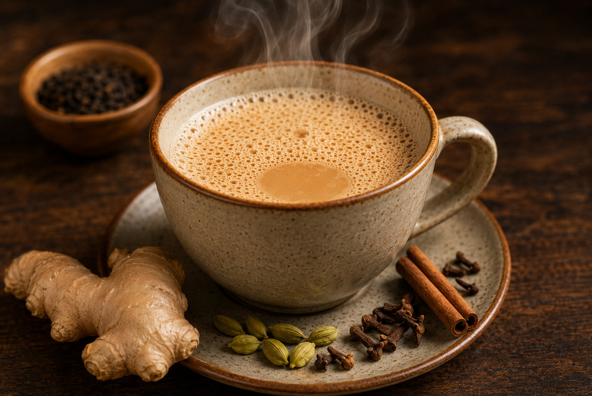

Home
Masala Chai

Description
Traditional masala chai starts by boiling water with crushed whole spices and fresh ginger to release their essential oils. Strong black tea leaves and sugar are added next, followed by milk. The mixture is simmered together until rich, dark, and fragrant, then strained into cups
Ingredients
- 1 cup water(250 ml)
- 1 cup milk
- 2 teaspoons loose leaf CTC black tea
- 2-3 teaspoons sugar
- Fresh ginger
- 2 green cardamon pods, 2 cloves, small piece of cinnamon
Steps
- Crush Spices: Use a mortar and pestle to coarsely crush the cardamom, cloves, cinnamon, and ginger.
- Boil Water and Spices: Pour 1 cup of water into a saucepan and bring it to a boil. Add the crushed spices and ginger. Boil for 2 to 3 minutes.
- Add Tea and Sugar: Add the loose tea leaves (or tea bags) and sugar to the spiced water. Boil for 1 minute to release the color and strength.
- Add Milk: Pour in 1 cup of milk. Bring the mixture back to a rolling boil, letting it simmer for 2 to 3 minutes until it turns a rich caramel-brown color.
- Strain and Serve: Pour the hot chai through a fine mesh strainer directly into mugs. Serve hot.